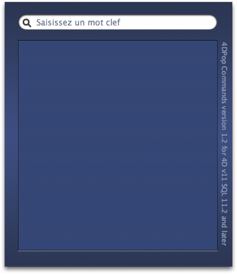
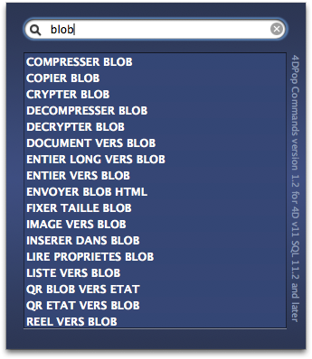
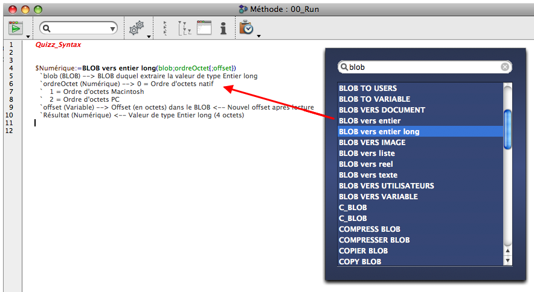
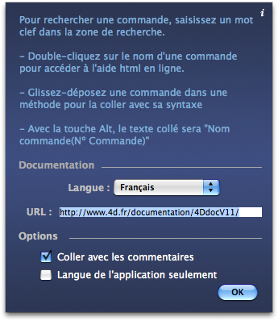

|
|
||||
|
|
||||
4DPop Commands permet de retrouver rapidement le nom d'une commande en Français ou en Anglais, d'accéder à la page de la documentation en ligne ou de coller dans l'éditeur de méthode la commande choisie avec sa syntaxe et une explication succinte de la valeurs des paramètres attendus.
| 1. | Créez un dossier "Components" à côté du fichier de structure de votre base (".4db") |
| 2. | Placer le dossier "4DPop Commands.4dbase"* ou un alias de ce dernier dans le dossier "Components". Si vous utilisez le composant "4DPop", déposer le dossier/package "4DPop Commands.4dbase" sur la palette pour créer automatiquement le raccourci dans le dossier "Components" et redémarrer la base. |
| 3. | Ouvrez votre base. |
| 4. | Si le composant 4DPop est installé un nouveau bouton "Commandes" se trouve dans la barre d'outils.
Un clic sur le bouton ouvre le dialogue de recherche
Si le composant 4DPop n'est pas installé il faut, pour ouvrir l'outil, sélectionner dans le menu "Exécuter" la ligne "Méthodes..." puis dans la liste des méthodes proposées sélectionner "Commandes" et enfin cliquer sur le bouton "Exécuter" (la méthode peut également être appelée depuis toute méthode de la base hôte) |
*Sur Macintosh, le composant est un package dont l'extension ".4dbase" n'est pas obligatoirement visible en fonction des réglages de vos préférences d'affichage.
L'outil présente une palette unique de recherche vous invitant à saisir une partie d'un nom de commande, au fur et à mesure de la frappe, la liste des commandes trouvées est mise à jour, elle regroupe les noms des commandes 4D.
|  |  |
Deux actions sont possibles à ce stade :

Si la touche Option/Alt est enfoncée au moment du glissé, le texte collé sera : Nom commande (Nº de la commande).
Un clic sur le bouton "i" en haut à droite de la fenêtre présente les réglages possibles :
Les paramètres sont enregistrés dans le fichier "4dPop v11 preference.xml" qui se situe dans le dossier des préférences de 4D. |
 |
version 1.2 :
- Les commandes peuvent être maintenant présentées dans les deux langues
Ce composant est fourni en version compilée, mais vous trouverez le code source dans le dossier "SOURCES" à l'intérieur du dossier du composant.
Un forum pour 4DPop est disponible à cette adresse : Forum 4DPop